Introduction
So far, every program you've written runs the same lines in the same order, every single time. Selection changes that. It lets your program ask a question and choose a path based on the answer — accept this password or reject it, award an A or a B, charge the adult price or the child price. This is where programs start making decisions.
Key Terms
age >= 17.=, ≠, <, >, ≤, ≥.< > ≤ ≥ = ≠ and the logical operators AND, OR and NOT — and read and explain code that uses them.Simple Conditions — the IF Statement
Think about your own morning: IF today is a weekday, THEN go to school. One condition, one action. In pseudocode:
1. IF today = "weekday" THEN 2. Go to school 3. END IF
Line 1 is the condition. Line 2 only happens if the condition is true. If it's false, the program skips straight past END IF and carries on. Adding an ELSE gives the program something to do on false days too:
1. IF today = "weekday" THEN 2. Go to school 3. ELSE 4. Go shopping 5. END IF
Exactly one branch runs — school or shopping, never both, never neither. Conditions are built with the comparison operators:
| Meaning | Exam papers | Python |
|---|---|---|
| Equal to | = | == |
| Not equal to | ≠ | != |
| Less than | < | < |
| Greater than | > | > |
| Less than or equal to | ≤ | <= |
| Greater than or equal to | ≥ | >= |
Here's a single IF doing real work in a past paper question — try it yourself before opening the walkthrough.
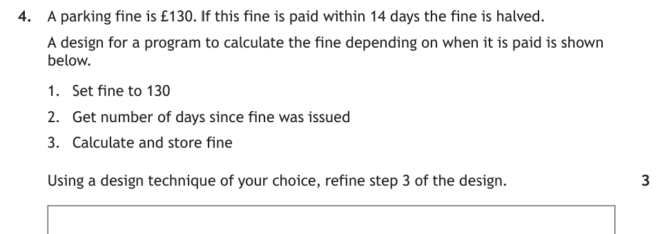
How to tackle it: "Refine step 3" means breaking that one step down into the smaller steps that actually carry it out — the stepwise refinement we met on the Design page. Three marks means the marker is looking for three ingredients, so we work out what each one is:
- The condition — was it paid within 14 days? That's
days ≤ 14. - The calculation — "halved" means
fine / 2. - The assignment — the answer has to be stored back in
fine, or it's lost.
Notice what isn't needed: an ELSE. If the fine is paid late it simply stays at £130, and step 1 already put 130 there. A branch with nothing to do doesn't need writing.
Watch the trap: don't just write SET fine TO 65. The marking instructions are explicit — if you show a calculation and then assign 65 anyway, ignoring your own working, you lose the third mark. Work from the variable, not from the number in your head.
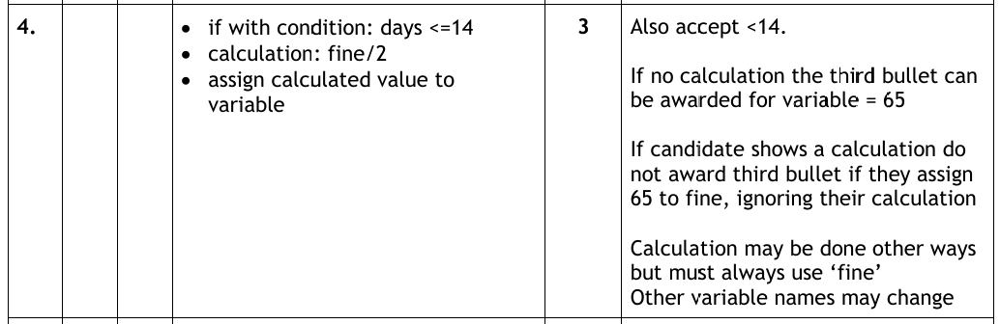
An example would be:
3.1 IF days ≤ 14 THEN
3.2 SET fine TO fine / 2
3.3 END IF
IF & ELSE in Python
Remember the diamond symbol from flowcharts? This is how those yes/no decisions become code. Three bits of Python punctuation to get right: the colon at the end of the if line, the indentation of everything inside the branch, and double equals for comparison:
# Ask the user to enter a password
passwd = input("Please enter the password: ")
# Is access granted?
if passwd == "hello123":
print("Access granted")
# Ask the user for their age
age = int(input("Please enter your age: "))
# Old enough to drive?
if age >= 17:
print("Broom broom")
else:
print("Sorry, no drive yet")
== asks a question ("are these equal?"); a single = gives an order ("store this!"). Mixing them up inside an if is a classic syntax error.Complex Conditions — AND, OR & NOT
Some decisions need more than one condition. A theme park ride might require you to be at least 120 cm tall and no taller than 200 cm. The logical operators join conditions together — and if you've done any electronics, these are the same basic logic operations used for signal processing:
| Operator | The whole thing is TRUE when… |
|---|---|
AND | both conditions are true |
OR | at least one condition is true |
NOT | the condition is false (it flips the answer) |
A complex condition is any condition using two or more comparisons:
IF num1 > 3 OR num2 > 13 THEN IF num1 > 2 AND num2 < 13 THEN IF answer = "Yes" OR answer = "No" THEN IF NOT (num1 = 5) THEN
Is height >= 120 AND height <= 200 true when height is 150?
- First condition: 150 ≥ 120 → true
- Second condition: 150 ≤ 200 → true
true AND true→ the whole condition is true — on you get!
Now try height = 110: the first condition is false, and false AND anything is false. No ride today.
Condition Evaluator
Four examples of increasing difficulty — AND, OR, NOT, then brackets combining them. Pick a test value and press Evaluate: each comparison is checked in turn and coloured green for true or red for false, then the logical operator combines the colours into the final answer.
Now a past paper question on exactly this. It looks almost too easy — which is precisely why it's worth being sure about.
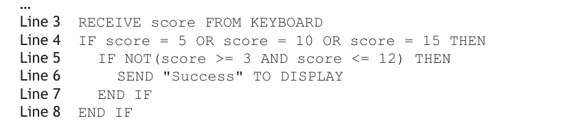
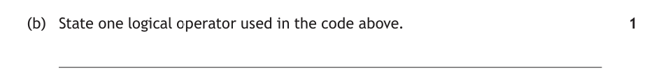
How to tackle it: There are only three logical operators at National 5 — AND, OR and NOT — so this is pure recall, as long as you can spot them. We scan the code for them:
- Line 4 uses OR twice.
- Line 5 uses NOT and AND.
This code happens to contain all three, so any one of them earns the mark. Write one — the question says "state one", so there's nothing to gain from listing all three.
Watch the trap: =, ≥ and ≤ are comparison operators, not logical ones. That's the easy mark thrown away here. The difference is worth remembering: comparison operators build a condition, logical operators join conditions together.
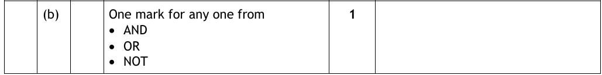
The answer is:
OR (or AND, or NOT — any one of the three)
Multiple Selection — Else-If (elif)
What about decisions with more than two outcomes? Exam grades: 70+ is an A, 60+ is a B, 50+ is a C, below that no award. You could write four separate if statements — but there's a better way. elif (short for else-if) checks a new condition only if the ones above it were false:
# Ask for percentage mark
mark = int(input("Please enter percentage mark: "))
# Check which grade the mark earns
if mark >= 70:
grade = "A"
elif mark >= 60:
grade = "B"
elif mark >= 50:
grade = "C"
else:
grade = "No award"
print(grade)
Follow a mark of 65 through: is it ≥ 70? No. Is it ≥ 60? Yes — grade is B, and the program skips the rest of the chain entirely. That's what makes elif smart: if the student got an A, the program never wastes time checking for a B or C. The else at the end catches everything that fell through.
elif mark >= 60: doesn't need to say "and less than 70" — anything 70 or above was already caught by the first branch. The chain does the "less than" for free. This also makes elif chains more efficient than separate ifs — see Evaluation for why that earns marks.That efficiency point is worth a whole mark in the following past paper question — and you may recognise the problem, because we analysed this very app on the Analysis page. Now we design it.
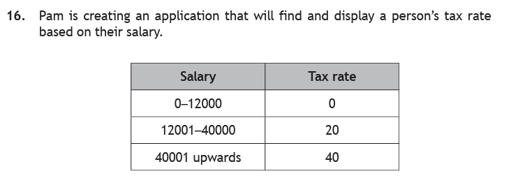
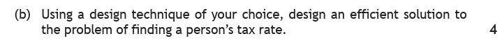
How to tackle it: Four marks, and the marking instructions split neatly into four things to get right — so we build the answer one mark at a time:
- Selection constructs — three outcomes means an
IF … ELSE IF … ELSEchain. - Conditions correct — the boundaries must match the table exactly.
- Tax rate assigned — each branch has to store the rate in a variable, not just mention it.
- Efficient solution — a whole mark for the word "efficient" in the question.
That last mark is the one to think about. Three separate IF statements would test all three conditions for every single person, and each condition would need two comparisons joined with AND (salary ≥ 12001 AND salary ≤ 40000). An else-if chain does neither: a band is only checked when the ones above it have already failed, so salary ≤ 40000 is enough on its own — anything 12000 or under was caught by the first branch.
Watch the trap: get the boundaries right. The bands are 0–12000 and 12001–40000, so the first test is ≤ 12000, not < 12000 — otherwise someone earning exactly £12,000 gets taxed at 20%.
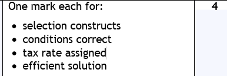
An example would be:
1 IF salary ≤ 12000 THEN
2 SET taxRate TO 0
3 ELSE IF salary ≤ 40000 THEN
4 SET taxRate TO 20
5 ELSE
6 SET taxRate TO 40
7 END IF
Nested IFs
A nested if is an if statement inside another if statement. The inner if is only ever reached when the outer condition is true — like a bouncer checking your ticket only after you've queued to the door.
# Cinema ticket check
age = int(input("Enter your age: "))
if age >= 15:
hasID = input("Do you have ID? (yes/no): ")
if hasID == "yes":
print("Enjoy the film")
else:
print("Sorry, no ID, no entry")
else:
print("This film is rated 15")
Reading nested code is all about the indentation — each level of indent means "only if the condition above me was true". The ID question is only asked at all when age >= 15.
Nested if or complex condition? Often either works. The nested version above could be written as if age >= 15 and hasID == "yes": — but then we couldn't give a different message for each failure. Use a complex condition when one yes/no answer is enough; nest when each condition needs its own response.
Here are two past paper questions that do exactly that — one asks you to read a nested if, the other to improve one. Work through each yourself before opening the walkthrough.
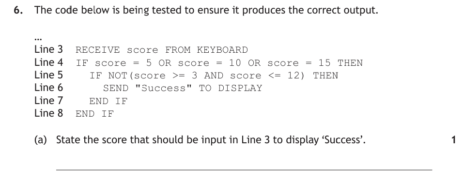
How to tackle it: "Success" is buried two levels deep, so it only appears when both conditions are true — the inner IF is never even reached unless the outer one passes. The trick is that the outer condition does us a favour: it narrows the whole of maths down to three candidates.
- Line 4 — the score must be 5, 10 or 15. Nothing else gets past this line, so we only need to test those three.
- Line 5 —
NOT(score ≥ 3 AND score ≤ 12). The bracket is true for anything from 3 to 12, and NOT flips it. So this line is true only when the score is outside 3–12.
Now we test each candidate against that second condition: 5 is inside 3–12, so the bracket is true and NOT makes it false. 10 is inside too — same result. 15 is outside 3–12, so the bracket is false and NOT flips it to true. Both conditions pass, and "Success" is displayed.
Watch the trap: it's tempting to read line 4 and answer "5, 10 or 15". The nested IF is there precisely to narrow it to one. If you found the NOT hard to read, the Condition Evaluator further up this page steps through this exact shape of condition.
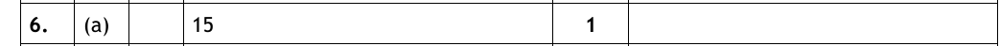
The answer is:
15
![Past paper question: the program is edited to calculate the total value of the passengers' tickets. The price of a ticket is different for each deck. A table shows Deck 1 with Saturday ticket numbers 1 to 50, Sunday ticket numbers 101 to 150 and a ticket price of £5; Deck 2 with Saturday ticket numbers 51 to 100, Sunday ticket numbers 151 to 200 and a ticket price of £10. The edited code reads: Line 5 RECEIVE lower FROM KEYBOARD. Line 6 RECEIVE upper FROM KEYBOARD. Line 14 IF ticketNumber is less than lower OR ticketNumber is greater than upper THEN. Line 15 SEND Ticket Refused TO DISPLAY. Line 16 ELSE. Line 17 SET numberOfPassengers TO numberOfPassengers + 1. Line 18 IF ticketNumber is less than or equal to open bracket lower + 49 close bracket THEN. Line 19 SET totalValue TO totalValue + 5. Line 20 END IF. Line 21 IF ticketNumber is greater than or equal to open bracket lower + 50 close bracket THEN. Line 22 SET totalValue TO totalValue + 10. Line 23 END IF. Line 24 END IF.](../resources/sdd/worked_examples/n5_nested_if_q2-1.png)
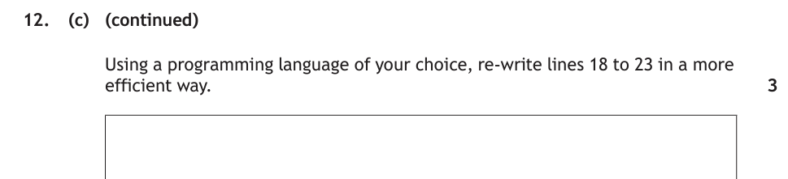
How to tackle it: First we work out what lines 18–23 actually do. Both IFs test the same ticket number against two halves of the same range: line 18 catches the first 50 tickets (Deck 1, £5), line 21 catches the rest (Deck 2, £10).
Then comes the insight the question is fishing for: every ticket that isn't in the first 50 must be in the second 50 — the program has already refused anything outside the range back on line 14. So the second condition is guaranteed to be the exact opposite of the first, and that is precisely what ELSE is for.
Why is that more efficient? As written, every ticket is tested twice, even when the first test already succeeded. With IF … ELSE, once the first condition is true the program never looks at the second one at all.
Three marks, three things to keep: a suitable condition for one deck, an ELSE for the other, and the running total calculations untouched.
Watch the trap: you're changing the structure, not the behaviour. Keep the same condition and the same + 5 and + 10 — an "efficient" rewrite that charges the wrong prices earns nothing.
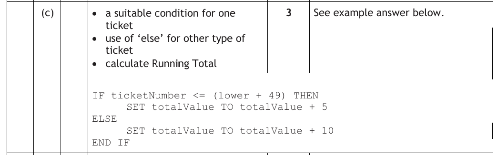
An example would be:
IF ticketNumber ≤ (lower + 49) THEN
SET totalValue TO totalValue + 5
ELSE
SET totalValue TO totalValue + 10
END IF
Practice Questions
Each of these tests the same skill as one of the worked examples above. Write your answer down before opening the marking instructions.
A concert ticket costs £48. If the ticket is bought more than 30 days before the concert, the price is reduced by a quarter.
A design for a program to calculate the price depending on when the ticket is bought is shown below.
- Set price to 48
- Get number of days before the concert
- Calculate and store price
Using a design technique of your choice, refine step 3 of the design.
Marking Instructions
One mark each for:
- an IF with the condition
days > 30 - a calculation reducing the price by a quarter (
price / 4subtracted, orprice * 0.75) - assigning the calculated value back to
price
Sample answer:
3.1 IF days > 30 THEN
3.2 SET price TO price - (price / 4)
3.3 END IF
No ELSE is needed — a ticket bought within 30 days simply keeps the £48 set in step 1. Do not award the third mark for assigning 36 while ignoring your own calculation.
The code below is used to check whether someone may enter a competition.
Line 5 RECEIVE age FROM KEYBOARD Line 6 IF age >= 12 AND age <= 15 THEN Line 7 IF NOT(age = 13) THEN Line 8 SEND "Eligible" TO DISPLAY Line 9 END IF Line 10 END IF
State one logical operator used in the code above.
Marking Instructions
One mark for either AND or NOT.
Do not accept >=, <= or = — those are comparison operators. Logical operators join conditions together; comparison operators build them.
A delivery company is creating an application that will find and display the delivery charge for a parcel based on its weight.
| Weight (kg) | Delivery charge |
|---|---|
| 0–2 | £3.50 |
| 2.01–10 | £6.00 |
| 10.01 upwards | £11.00 |
Using a design technique of your choice, design an efficient solution to the problem of finding the delivery charge for a parcel.
Marking Instructions
One mark each for:
- selection constructs
- conditions correct
- delivery charge assigned
- efficient solution
Sample answer:
1 IF weight ≤ 2 THEN
2 SET charge TO 3.50
3 ELSE IF weight ≤ 10 THEN
4 SET charge TO 6.00
5 ELSE
6 SET charge TO 11.00
7 END IF
The efficiency mark needs an else-if chain: three separate IFs would test every condition for every parcel, and each middle condition would then need an AND to set its lower boundary.
The code below is being tested to ensure it produces the correct output.
Line 3 RECEIVE number FROM KEYBOARD Line 4 IF number = 2 OR number = 8 OR number = 20 THEN Line 5 IF NOT(number < 10) THEN Line 6 SEND "Accepted" TO DISPLAY Line 7 END IF Line 8 END IF
State the number that should be input in Line 3 to display 'Accepted'.
Marking Instructions
20 (1 mark)
Line 4 narrows the options to 2, 8 and 20. Line 5 is true only when the number is not less than 10 — so 2 and 8 both fail, leaving 20 as the only value that reaches line 6.
A car park program charges £4 for a vehicle 2 metres tall or under, and £7 for a vehicle over 2 metres. Part of the program is shown below.
Line 10 IF vehicleHeight <= 2 THEN Line 11 SET totalTakings TO totalTakings + 4 Line 12 END IF Line 13 IF vehicleHeight > 2 THEN Line 14 SET totalTakings TO totalTakings + 7 Line 15 END IF
Using a programming language of your choice, re-write lines 10 to 15 in a more efficient way.
Marking Instructions
One mark each for:
- a suitable condition for one type of vehicle
- use of ELSE for the other type of vehicle
- the running total calculations kept correct
Sample answer:
IF vehicleHeight ≤ 2 THEN
SET totalTakings TO totalTakings + 4
ELSE
SET totalTakings TO totalTakings + 7
END IF
Every vehicle is either 2 metres or under, or over 2 metres — there is no third possibility, so the second condition is simply the opposite of the first. As originally written, every vehicle is tested twice.